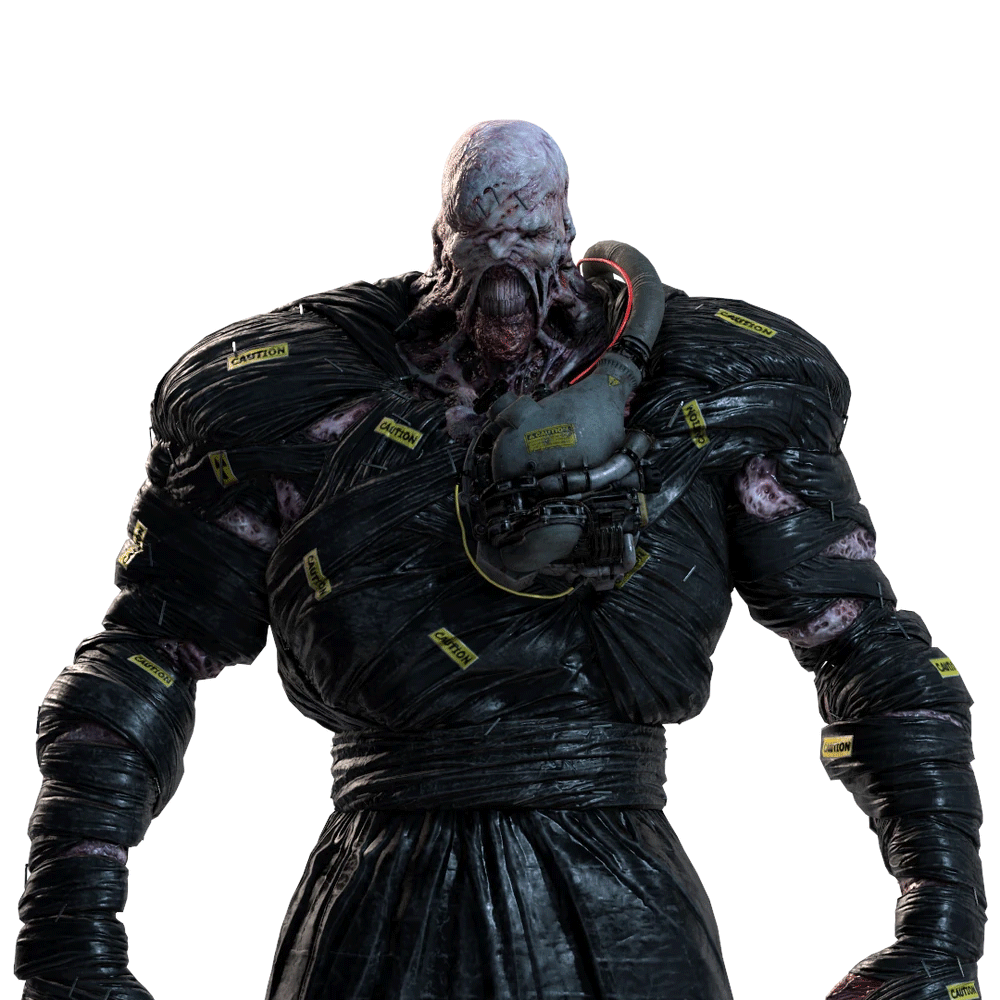

UMBRELLA CORPORATION - CLASSIFIED RESEARCH FILE
FILE ID: BOW-003 | CLEARANCE LEVEL: 5

SUBJECT: T-248 | STATUS: ACTIVE
Bio-Organic Weapon (BOW) — Type A: Pursuer Class
T-Virus / NE-α Parasite
HIGH
Nemesis-T Type is an advanced Tyrant host implanted with the experimental NE-α parasitic organism. Unlike standard BOWs, Nemesis retains basic intelligence, the ability to wield weapons, and demonstrates goal-oriented pursuit behavior. Primary directive: eliminate all S.T.A.R.S. members. Subject has demonstrated the ability to adapt mid-combat and survive ordinance that would neutralize lesser BOWs.
Sustained high-caliber weapons fire. Rocket propelled explosives. Subject can be temporarily staggered but possesses extreme regenerative capability courtesy of the NE-α parasite.
Most successful intelligent BOW deployment to date. Nemesis exceeded all pursuit and elimination benchmarks during Raccoon City field trials. NE-α integration is the key breakthrough — recommend expanding parasite research for next generation BOW development. Destruction of host body does not guarantee NE-α neutralization. Exercise extreme caution.